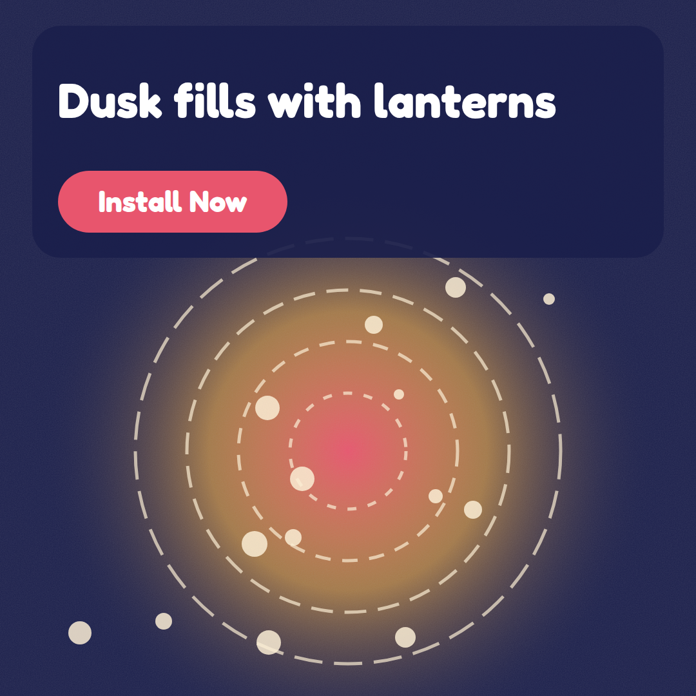
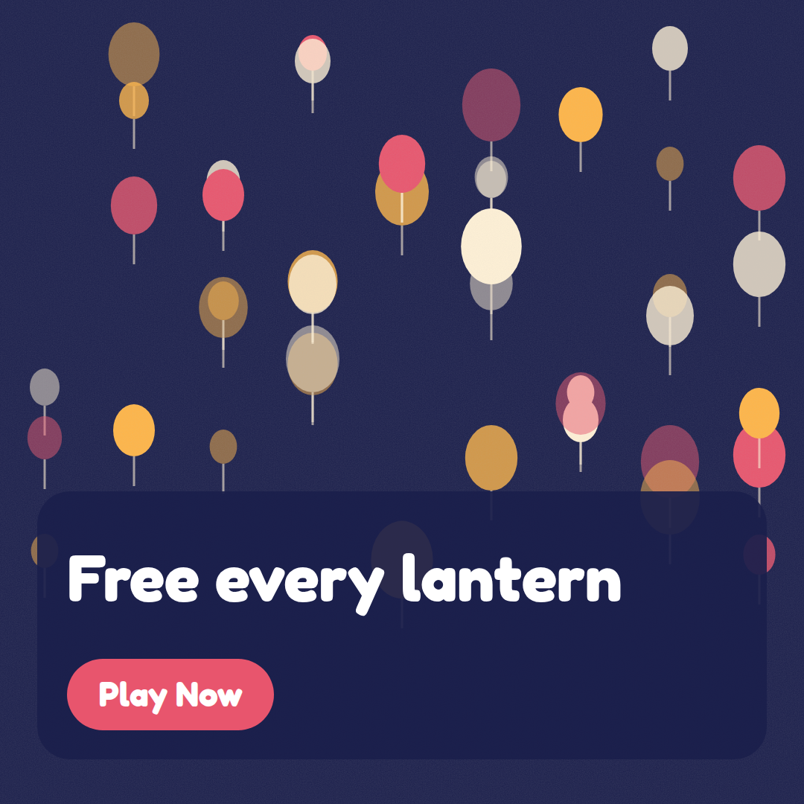
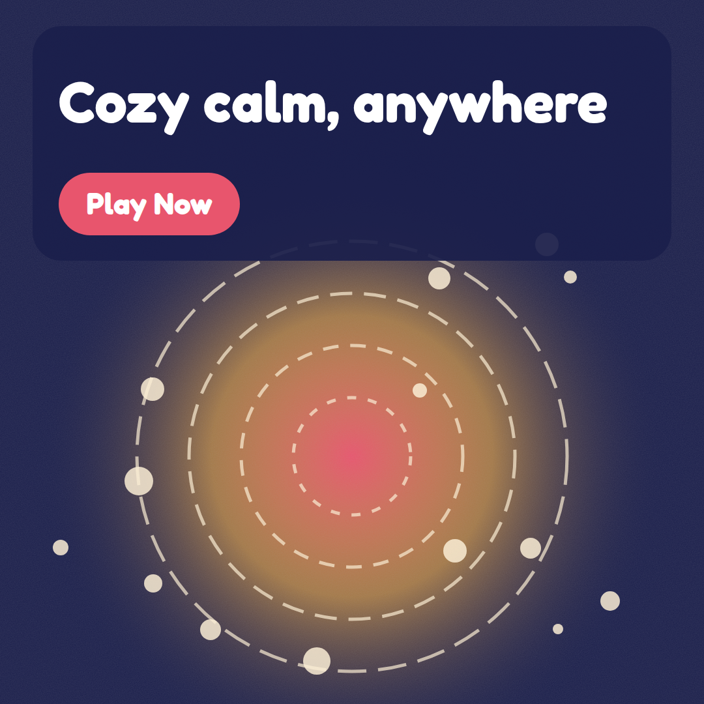
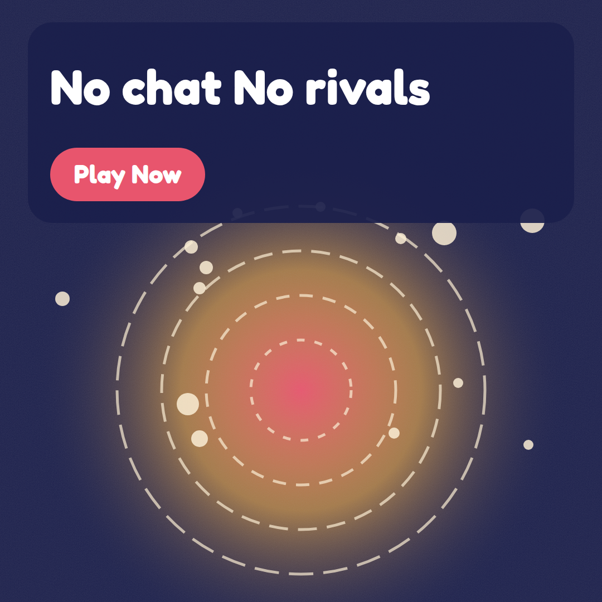
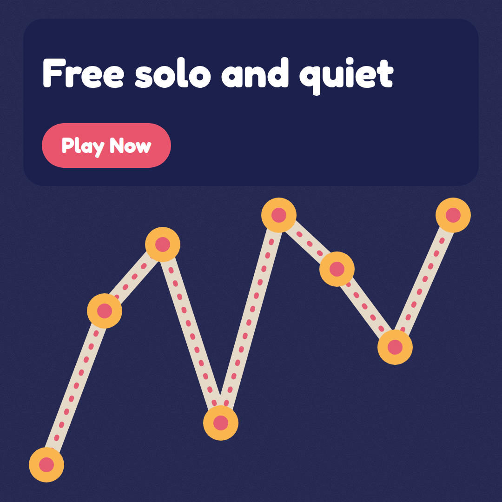
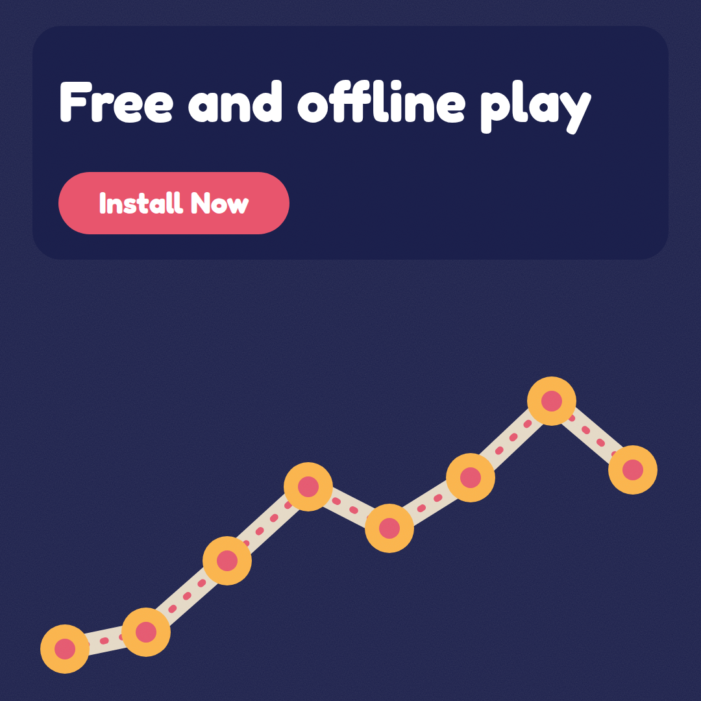
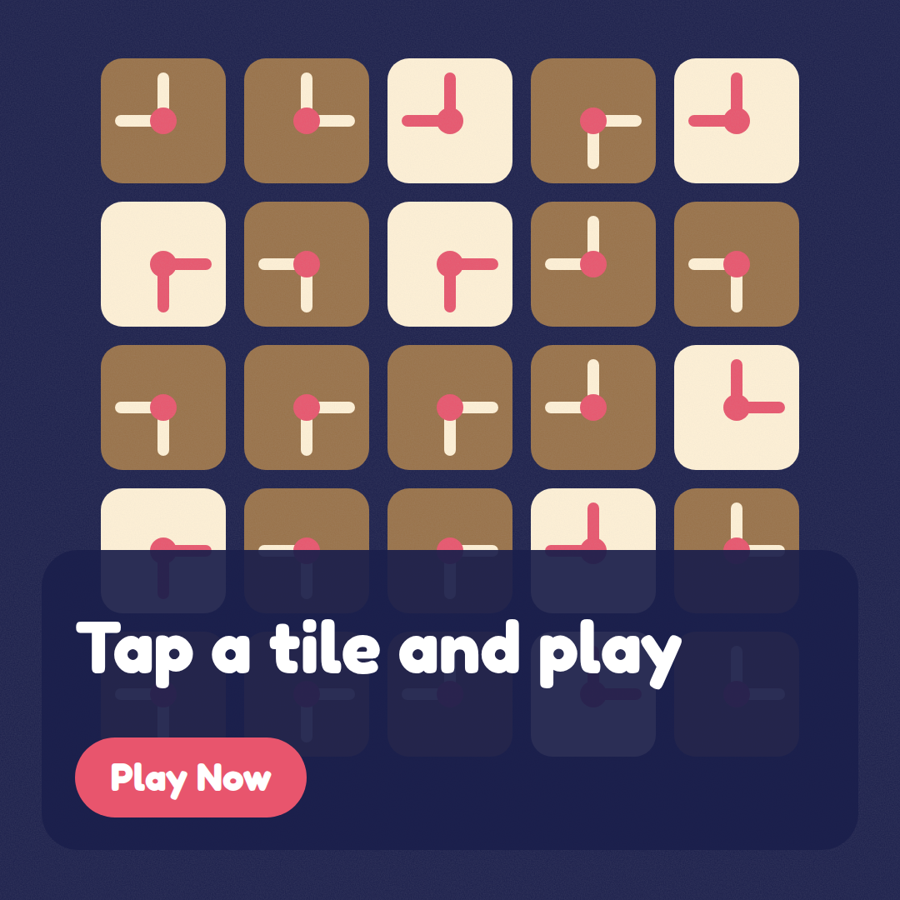
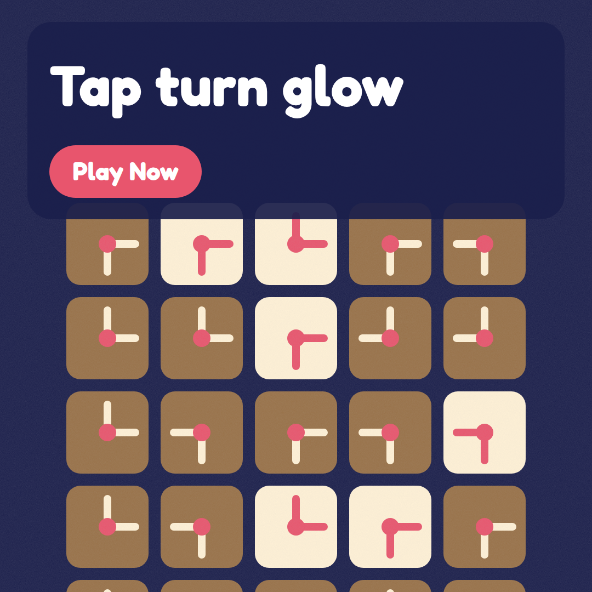
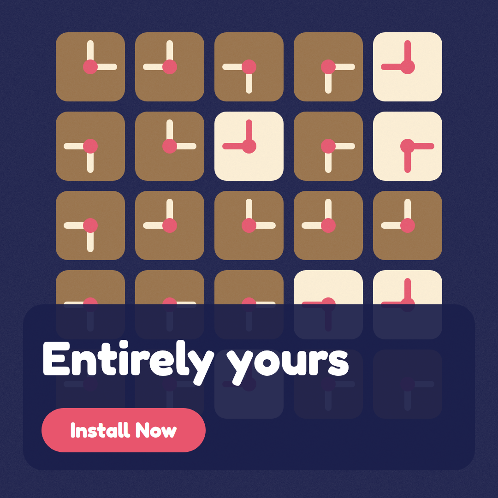

Lantern Drift: contact sheet
Fictional product, synthetic demo. Run lantern-drift-20261024-020522, mode full, image backend svg-fallback, cost USD 0.3584.
Top picks

Score 7.4. Strongest on legibility (9). Clear, high-contrast headline and CTA on a dusk palette with a warm glowing focal point, but the look is flat vector with gradients and dashed rings rather than layered paper-cut with grain, the lanterns are abstract dots, and the CTA is baked into the image. Audience: Visual-comfort seekers.

Score 7.35. Strongest on legibility (8). A clean, readable dusk-navy paper-cut creative that fits the palette and style well, but it lacks the thread mechanic from the headline, its in-image 'Free every lantern' line is ambiguous, and its baked-in CTA button is a small fake-UI risk. Audience: Visual-comfort seekers.

Score 7.25. Strongest on legibility (9). The ad is clean and highly legible, with a clear CTA and a calm dusk mood that supports the cozy-calm headline. However, it reads as flat vector gradients rather than layered paper-cut with grain, and it has no lantern or commute cue, so brand fit and message match are only moderate. Audience: Commuters and waiting-room fillers.

Score 6.85. Strongest on legibility (8). The text is clear and high-contrast, and the claims are accurate and safe. But the glowing orbital graphic reads as flat vector art rather than layered paper-cut, there are no recognizable lanterns to support 'Just lanterns', and the in-image button looks like fake UI and duplicates the headline. Audience: Solo-peace seekers.

Score 6.75. Strongest on legibility (9). The ad is clean and highly legible with a clear CTA, but the flat vector chart-like graphic misses the layered paper-cut dusk style and any lantern or drift cues. The in-image button and the headline wording mismatch ('Free solo and quiet' vs. 'Free, solo, and wonderfully quiet.') weaken policy safety and message match. Audience: Solo-peace seekers.

Score 6.65. Strongest on legibility (9). The text is crisp and the CTA is clear, and the 'free and offline' message fits the headline, but the generic data-chart visual has no lantern or paper-cut dusk feel, omits the cream #FFF1D6 as a main tone, and may suggest stats or earnings instead of the game. Audience: Commuters and waiting-room fillers.
Not selected


